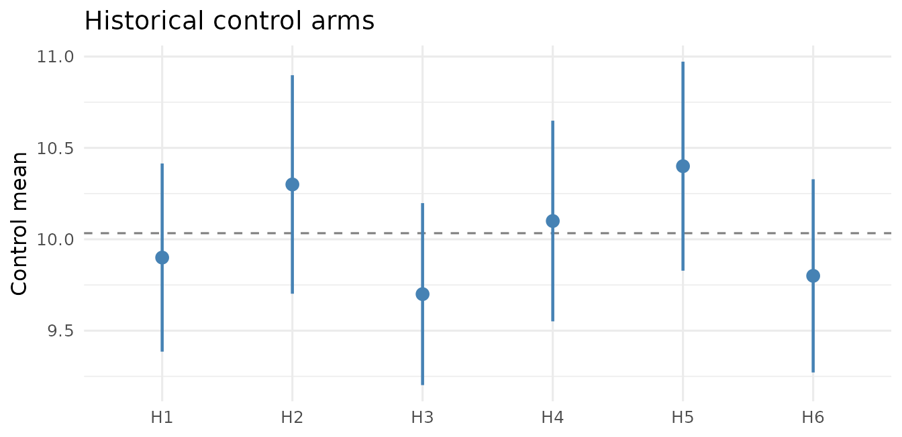
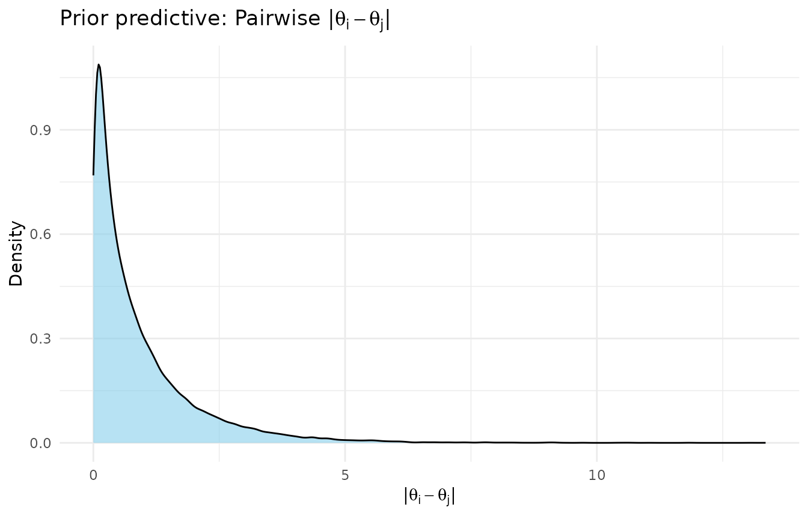
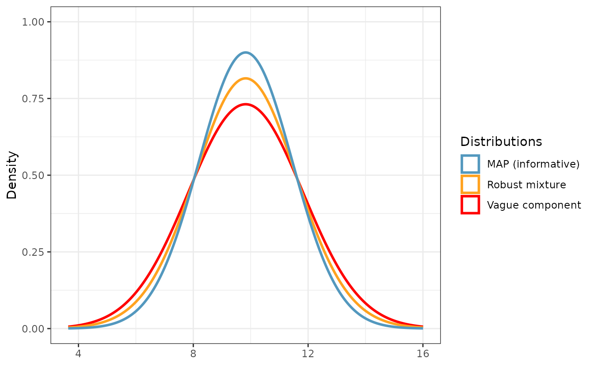
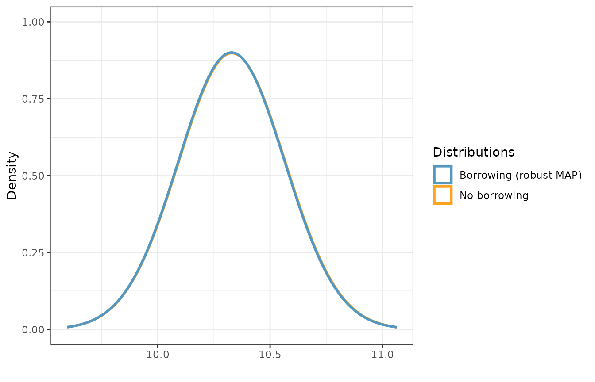

Meta-Analytic-Predictive (MAP) Priors with shrinkr and beastt
Jacob M. Maronge
Source:vignettes/map_prior_with_beastt.Rmd
map_prior_with_beastt.RmdOverview
A meta-analytic-predictive (MAP) prior summarizes several historical control arms into a single prior for the control mean of a new trial (Neuenschwander et al., 2010). It is a random-effects meta-analysis: study-specific control means are treated as exchangeable draws from a common population, and the prior for the next trial is the posterior predictive distribution for a new, as-yet-unobserved study. To guard against prior-data conflict, the MAP is then robustified with a vague mixture component (Schmidli et al., 2014), so the historical data are automatically down-weighted when they disagree with the current trial.
shrinkr and beastt split this work
cleanly:
-
shrinkrruns the hierarchical meta-analysis across the historical studies and returns the MAP as adistributionalobject. -
beasttrobustifies that MAP (robustify_norm()), combines it with the internal control arm to form the posterior (calc_post_norm()), and reports the effective sample size (ESS).
The hand-off between them is a single dist_normal
object. We use a continuous outcome with known
within-arm SD, which keeps every step conjugate.
The historical evidence
A MAP prior starts from what the historical studies
reported: a control-arm mean and its standard error. Here we
have six prior studies whose control means cluster fairly tightly around
10. With a known SD, each standard error is just
sigma / sqrt(n).
n_hist <- c(58, 43, 62, 51, 47, 55)
hist <- tibble(
study = paste0("H", 1:6),
n = n_hist,
ybar = c(9.9, 10.3, 9.7, 10.1, 10.4, 9.8),
se = sigma_known / sqrt(n_hist)
)
hist
#> # A tibble: 6 × 4
#> study n ybar se
#> <chr> <dbl> <dbl> <dbl>
#> 1 H1 58 9.9 0.263
#> 2 H2 43 10.3 0.305
#> 3 H3 62 9.7 0.254
#> 4 H4 51 10.1 0.280
#> 5 H5 47 10.4 0.292
#> 6 H6 55 9.8 0.270
ggplot(hist, aes(study, ybar)) +
geom_hline(yintercept = mean(hist$ybar), linetype = "dashed", color = "grey50") +
geom_pointrange(aes(ymin = ybar - 1.96 * se, ymax = ybar + 1.96 * se),
color = "steelblue", linewidth = 0.8) +
labs(x = NULL, y = "Control mean", title = "Historical control arms") +
theme_minimal(base_size = 12)
The current trial contributes its own control arm of 70 patients:
Hierarchical meta-analysis with shrinkr
With a known SD and a flat Stage-1 prior, each study’s posterior for
its control mean is exactly N(ybar, se^2) — so the reported
summaries are the Stage-1 result, and we can hand them straight
to shrink(). The hierarchical model is
with a vague prior on the population mean mu and a
weakly-informative half-normal on the between-study SD
tau.
hierarchical_priors <- list(
mu = dist_normal(0, 100),
tau = dist_truncated(dist_normal(0, sigma_known / 4), lower = 0)
)It is worth checking what that tau prior implies about
differences between study means before fitting.
sample_prior_predictive() draws study effects and
prior_pairwise_differences() summarizes the implied
|theta_i - theta_j| (the location mu cancels,
so this isolates heterogeneity even though mu is
vague).
prior_pred <- sample_prior_predictive(hierarchical_priors,
n_groups = nrow(hist), n_draws = 2000)
plot(prior_pairwise_differences(prior_pred))
If that spread looks unreasonable on the clinical scale, adjust the
tau prior now. Then fit, passing the study summaries
through shrink()’s mle /
var_matrix interface.
fit_map <- shrink(
mle = hist$ybar,
var_matrix = hist$se^2,
hierarchical_priors = hierarchical_priors,
chains = 4, iter = 4000, warmup = 1000,
seed = 2026, refresh = 0, verbose = FALSE
)
summarize_mu_tau(fit_map)
#> # A tibble: 3 × 9
#> parameter mean sd q2.5 q50 q97.5 rhat ess_bulk ess_tail
#> <chr> <dbl> <dbl> <dbl> <dbl> <dbl> <dbl> <dbl> <dbl>
#> 1 mu 10.0 0.152 9.72 10.0 10.3 1.00 5363. 4372.
#> 2 tau 0.193 0.151 0.00702 0.163 0.571 1.00 4483. 5013.
#> 3 tau_squared 0.0601 0.0939 0.0000493 0.0266 0.326 1.00 4483. 5013.Building the MAP prior
The MAP is the posterior predictive distribution for
a new study’s control mean. Marginalizing over (mu, tau),
the Normal approximation has mean E[mu] and variance
Var(mu) + E[tau^2] — the second term is the predictive
spread from heterogeneity, which is what keeps a MAP honestly wider than
a simple pooled mean.
make_map <- function(fit) {
d <- extract_mu_tau(fit)
dist_normal(mean(d$mu), sqrt(var(d$mu) + mean(d$tau_squared)))
}
map_prior <- make_map(fit_map)
map_prior
#> <distribution[1]>
#> [1] N(10, 0.083)A convenient way to read the MAP’s strength is its prior
effective sample size: for a Normal prior on a mean
with known SD, that is sigma^2 / Var(prior) — how many
control patients the prior is “worth”.
map_ess <- sigma_known^2 / variance(map_prior)
map_ess
#> [1] 48.14818Robustify and form the posterior with beastt
robustify_norm() mixes the MAP (“informative”) with a
vague component so the data can overrule the prior under conflict.
Passing the MAP’s prior ESS as n makes the vague component
a unit-information prior (variance sigma^2); we put equal
weight on the two components.
rmp <- robustify_norm(map_prior, n = map_ess, weights = c(0.5, 0.5))
vague_prior <- dist_normal(mix_means(rmp)[["vague"]], mix_sigmas(rmp)[["vague"]])
plot_dist("MAP (informative)" = map_prior,
"Vague component" = vague_prior,
"Robust mixture" = rmp)
Now combine the robust mixture with the internal control arm. With a
known SD the posterior is again a mixture of normals, and
beastt updates the mixture weights automatically —
down-weighting the informative component if the internal data disagree
with it. The no-borrowing reference simply uses the vague component
alone.
post_borrow <- calc_post_norm(int_ctrl, response = y,
prior = rmp, internal_sd = sigma_known)
post_nobrrw <- calc_post_norm(int_ctrl, response = y,
prior = vague_prior, internal_sd = sigma_known)
plot_dist("No borrowing" = post_nobrrw,
"Borrowing (robust MAP)" = post_borrow)
The effective sample size compares posterior variance with and
without borrowing (Pennello & Thompson, 2008): a borrowed posterior
with variance Vb is as informative as
n_int * V0 / Vb patients.
ess_post <- n_int * variance(post_nobrrw) / variance(post_borrow)
tibble(
quantity = c("Posterior mean", "Posterior SD", "Effective sample size"),
no_borrowing = round(c(mean(post_nobrrw), sqrt(variance(post_nobrrw)), n_int), 2),
robust_map = round(c(mean(post_borrow), sqrt(variance(post_borrow)), ess_post), 2)
)
#> # A tibble: 3 × 3
#> quantity no_borrowing robust_map
#> <chr> <dbl> <dbl>
#> 1 Posterior mean 9.66 9.77
#> 2 Posterior SD 0.24 0.21
#> 3 Effective sample size 70 93.1Because the historical and internal data are compatible, the robust MAP sharpens the control posterior and lifts the effective sample size well above the 70 internal controls. Under a prior-data conflict the informative component would lose weight and that gain would shrink toward zero — the self-correcting behavior the robust mixture is there to provide.
Summary
-
shrinkrruns the hierarchical meta-analysis and builds the MAP as adist_normal, taking study summaries through themle/var_matrixinterface. -
beasttrobustifies it (robustify_norm()), forms the internal control posterior (calc_post_norm()), and reports the ESS. - Check the heterogeneity prior with
sample_prior_predictive()/prior_pairwise_differences()before fitting, and lean on the robust mixture so the data can overrule the historical evidence when they disagree.
References
Neuenschwander, B., Capkun-Niggli, G., Branson, M., & Spiegelhalter, D. J. (2010). Summarizing historical information on controls in clinical trials. Clinical Trials, 7(1), 5–18.
Schmidli, H., Gsteiger, S., Roychoudhury, S., O’Hagan, A., Spiegelhalter, D., & Neuenschwander, B. (2014). Robust meta-analytic-predictive priors in clinical trials with historical control information. Biometrics, 70(4), 1023–1032.
Pennello, G., & Thompson, L. (2008). Experience with reviewing Bayesian medical device trials. Journal of Biopharmaceutical Statistics, 18(1), 81–115.